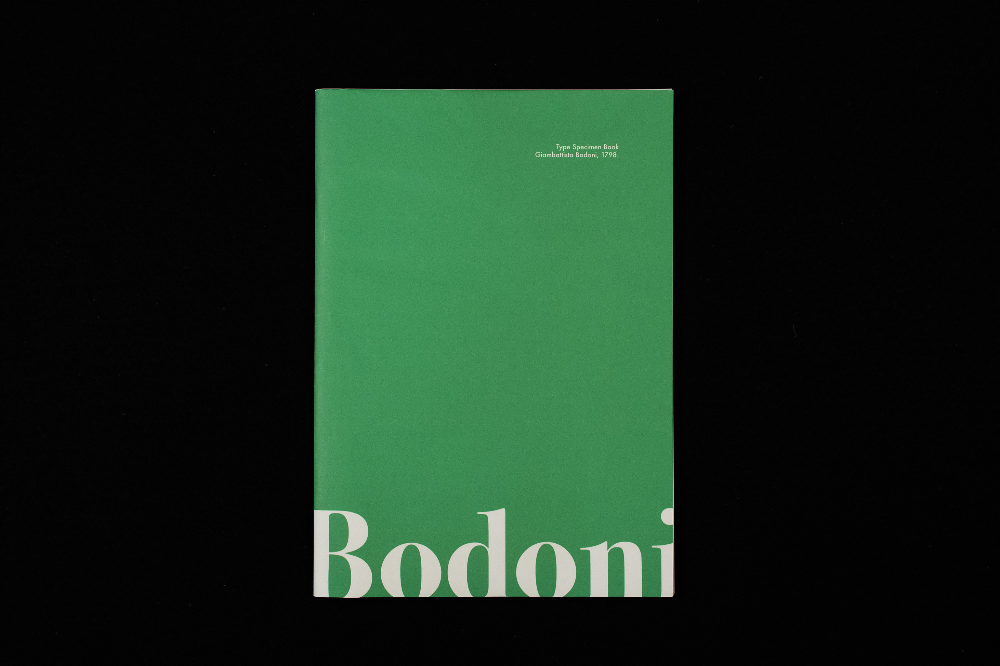
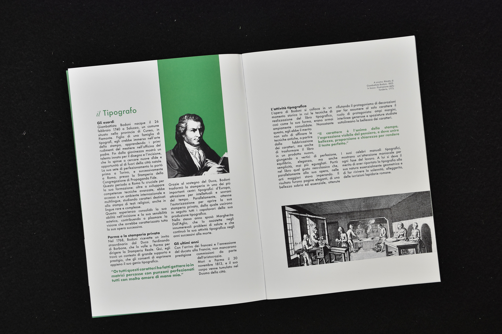
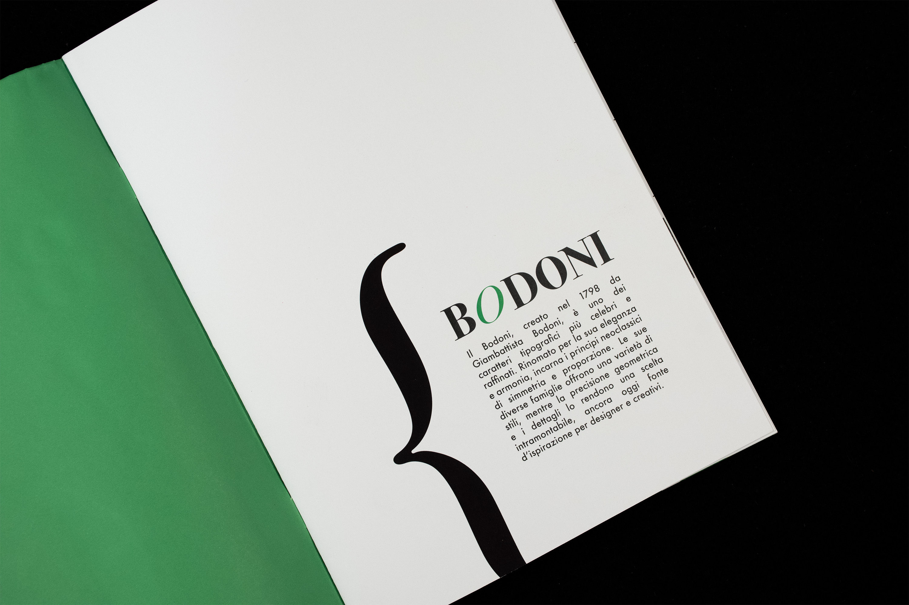
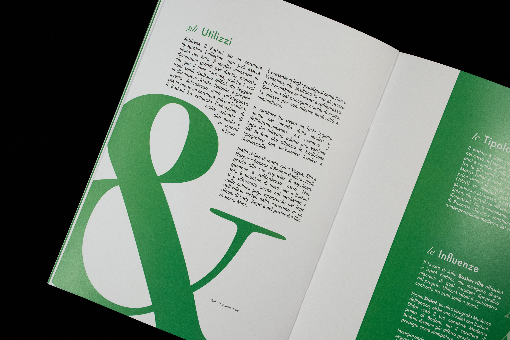
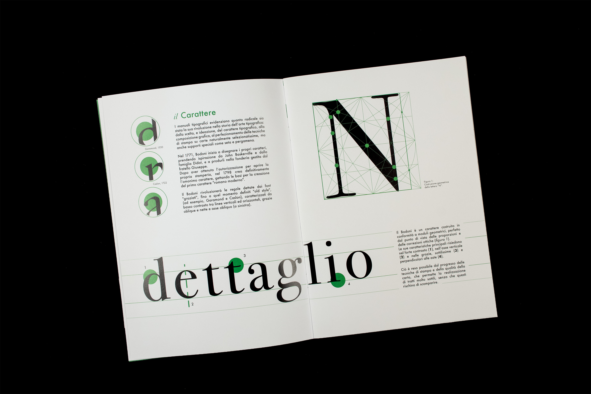
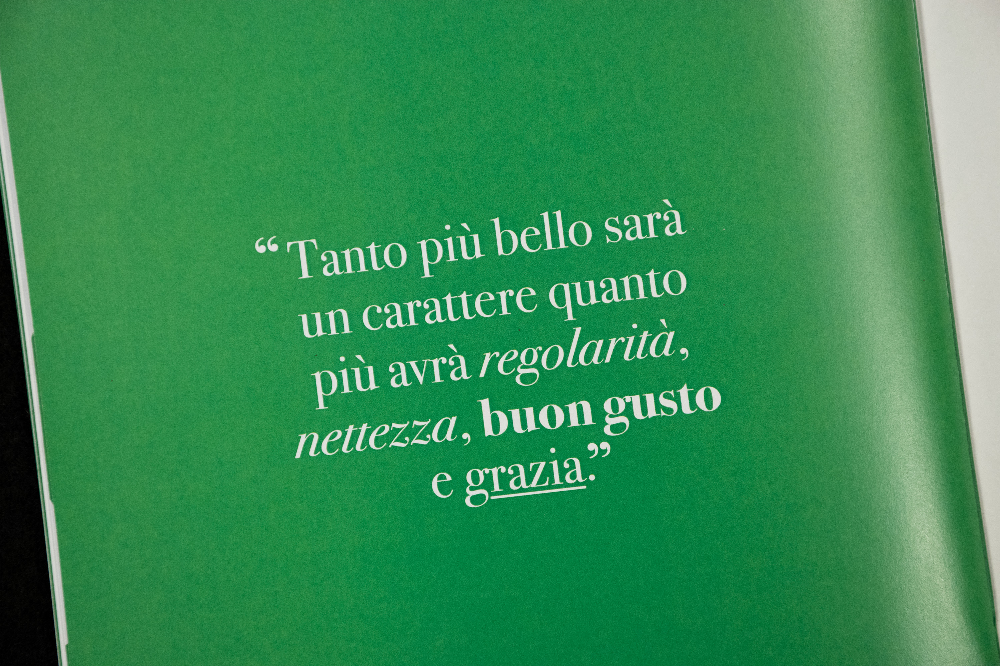

A type specimen book presenting a formal analysis of Giambattista Bodoni's iconic neoclassical typeface.
The project evaluates the typeface's aesthetic features and proportional rules across multiple scales. Accompanied by a curated historical essay on the punchcutter's work, the publication pairs bright, minimalist colour fields with stark black-and-white grids. A large-scale display poster completes the editorial research.





